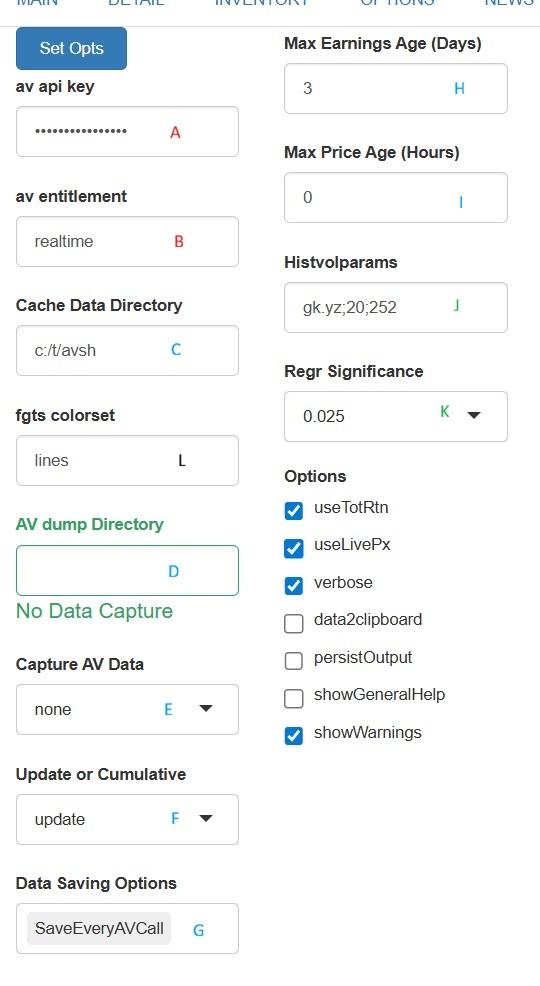
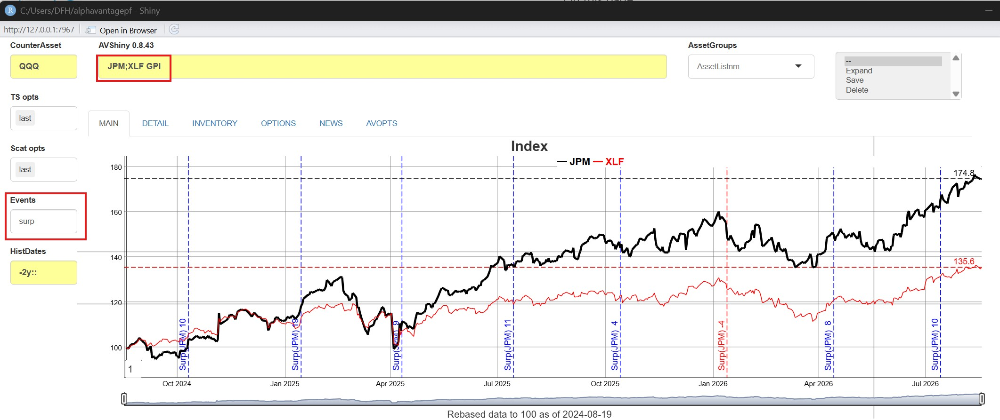

ShinyApp Graphs and Options
Source:vignettes/ShinyApp_2_Graphs_and_Options.Rmd
ShinyApp_2_Graphs_and_Options.RmdThis vignette describes in detail graphing and data options available in av_runShiny(). Graphing options are typically set within the boxes to the side of the main screen, while all other options are set in the AVOPTS tab.
Application Options
Application defaults are initialized upon setup, and are saved
persistently in a file ()avpf_constants.RD) within a cache
directory chosen by
tools::R_user_dir("alphavantagepf", which = "cache"). Data
itself is stored in the same directory unless a Cache data
directory is set up. The options can be categorized within
three groups: required API options, data management options, and
others.

| Category | Description |
|---|---|
| A: Keys and Data | API keys and path to saved data API connection is minimal requirement |
| B: Data Update Frequency | How often to update prices/earnings |
| C: AV Capture | Capture individual calls to API |
| D: Options | Other binary options to control app behavior |
Required API Options
This app is centered around the Alphavantage API, and requires a valid API key and entitlement status to function.
| Field | Description |
|---|---|
| av api key | API key obtained form Alphavantage. |
| av entitlement | Entitlement status, either delayed or
realtime
|
Data Management Options
Data is stored in one or two directories, depending on whether a Dump directory is set.
Price series and user time series are kept in a cache directory which defaults to the temporary directory created for the package, but can be set as above to a more user friendly location (e.g.
c:/t/avshas above). Earnings data is stored in the same directory.Update Frequencies are set in set in the (B) Update frequencies section above, and are the maximum time between downloads of data. For prices, only the smallest historical data is retrieved and updated into the local dataset if they are older than the time specified1. Historical earnings estimates are fuller redownloaded if they are older than the number of days specified.
The results of each call to the Alphavantage API can optionally be stored in a Dump directory. The purpose of this is to allow users to “scrape” their thoughts, analyses, etc. on a per-call basis. Please be aware that this does increase the time spent on each command issued. That directory is set in Dump Directory (in the
(C) Dump data: section above) where data is stored as a named (by function call name) list ofdata.tables().
The options associated with the dumping are given below:
| Field | Description |
|---|---|
| Cache Data | Directory to store time series, earnings, and earnings estimates |
| AV dump directory | Directory to store API call results. Must be set for dumping to occur. |
| Capture AV Data | Capture individual API callsNone
(default): Turn capture off, even if the directory is
set.nopricesonly: Capture anything but time
series data.all Capture all calls |
| Update or Cumulative |
update data captured by symbol, or
(cum) capture every time with a timestamp. |
| Data Saving Options | Manage capture fileSaveEveryAVCall:
Save all calls cumulatively when the call is
made.CleanOnStart: Delete dump data on every startup of
the app.None: Keep dumped data in memory, avoiding IO
overheadSaveNowonOptUpdate
|
More detail on this feature is in the Data Vignette
Non-analytic Options
Non analytic features are set as check boxes in options section D, and are described in the following table. Note that any changes made only take effect when the Set Opts button is pressed.
| Field | Description |
|---|---|
| UseTotRtn | Use total return data (i.e. adjusted for splits and dividends in price series) |
| UseLivePx | Use separate Alphavantage calls to always have the most recent price point. |
| verbose | Display (or not) informative messages in the console. |
| data2clipboard | Copy select data from each analysis to the clipboard
for pasting into other applications. This is useful for other ad-hoc analysis without going through download boxes or extra buttons |
| persistOuput | Keep analyses output (graphs, tables, etc) until replaced by new ones |
| showGeneralHelp | Show (or not) a general help screen when
AV.H is run. |
| showWarnings | Suppress warnings from other packages (e.g. ggplot2) |
| useAbbreviations | Abbreviate Ticker Names, dropping superfluous words in title |
| allDaysOnGraph | Show non-equity business days if relevant2 on dygraphs |
Analytics Options
These are default statistical parameters:
| Field | Description |
|---|---|
| HistVolParams | Historical volatility parameters, see TTR::volatility |
| Regr Significance | Significance level below which regression results are highlighted |
Graphing Options
The default graphing package used is FinanceGraphs which provides finance-specific graphing functions based on dygraphs and ggplot2. Any of the features described there can be used, most notably:
- Event Sets which can be used to highlight events or regimes in a time series.
- Automated rescaling of data to put in total return (index) terms.
- Annotations to highlight levels on a graph, e.g. last values.
-
Full aesthetic control of the graphing output,
including colors, line types, and point types. For example, to change
color sets for timeseries lines, use an aesthtic set
(e.g.
linesoraltlines_6). See Color customization
Specific options for this app are described below, referencing this example:

Historical timeframes are given by date strings in ther
HistDatesbox. For example, time series for the past 4 years fromSys.Date()are specified as"-4y::". Note this is the parameter is used for all historical analyses and requests, not just graphs. For example,IBM EAwould only report 4 years of data given the configuration described here.Time Series Opts are options that can be used to decorate or modify a time series graph. Choices are
| TS Choice | Description |
|---|---|
last |
Add last value for each series at last point |
splitts |
Split first series into separate axis |
lastlabel |
Add label for series at last point |
highlightfirst |
Make first series bolder |
hilow |
Add high-low ranges if available |
- Scatter Options apply to scatterplots, and are:
| Scatter Choice | Description |
|---|---|
last |
Show last value as large point |
tailhedge |
Split return scatter plot regressions into three piecewise regressions, one each for big negative returns, big positive returns, and everything else |
-
Events are dates or date ranges highlighted in the
graph. Any valid event string can be used. For example,
tp,5finds 5 turning points for the first series plotted, as seen in the picture above.
Enhancements for this app.
A few enhancements have been added to the av_runShiny() set of options.
- Tail Hedge regressions (see above) separate out large moves from smaller moves in asset regressions.
- Extra events. Im addition to any events defined or created from the FinanceGraphs package, you can also add to timeseries:
| Event | Description |
|---|---|
earn |
Show EPS at report dates |
surp |
Show earnings suprises at report dates, color coded by sign. |
div |
Show dividends at ex-dates |
divpct |
Show dividends as percent of close at ex-dates |
As an example of how to use those events, here is a graph of JPM and XLF, with earnings surprise events:
